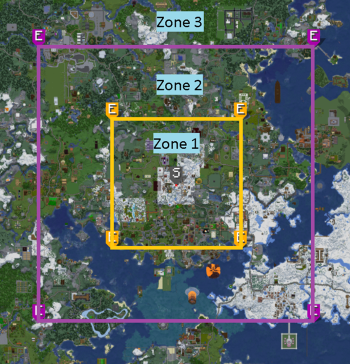

Richtlinien 💡 Feedback geben
Die folgenden Richtlinien dienen als Ergänzung der Serverregeln und sind ebenfalls zu befolgen.
Melde dich bei Unklarheiten und Fragen sehr gerne bei einem Teammitglied oder im Discord.
Farmen
Definitionen
Bei einer manuellen Farm gehen wir von händisch bedienbaren Farmen aus (z.B. Felder) aus.
Halbautomatisch ist eine Farm dann, wenn die Farmanlage durch Hilfsmechanismen wie Redstone, Trichter, Wasser, und vergleichbarem ergänzt werden. Der Anwender bedient Elemente der Farm dabei jedoch weiterhin eigenständig.
Farmen sind vollautomatisch, wenn sie keinen Eingriff von dem Anwender erfordern und in der Lage sind, eigenständig zu laufen.
Anmeldepflicht
Jede halb- & vollautomatische Farm muss angemeldet werden, damit wir als Team die unter den Farmanmeldungen berücksichtigten Kriterien überprüfen und gegebenenfalls Hilfestellung leisten können.
Halb- und vollautomatische Farmen müssen in der dafür vorgesehenen Industriewelt erbaut werden. Es gibt jedoch bestimmte Anlagen zur Item-Umwandlung, welche in der Bauwelt unter Auflagen gebaut und betrieben werden dürfen.
Erlaubte Item-Umwandlungsanlagen in der Bauwelt
Zur Item-Umwandlung gehören Anlagen, welche ausschließlich dazu dienen, ein bestehendes Item oder Material in ein anderes umzuwandeln. Die folgende Liste stellt die Anlagen dar, die aktuell automatisiert in der Bauwelt erlaubt sind:
Es dürfen insgesamt bis zu 10 Umwandlungsobjekte (Anlagen aus der Tabelle) an einem gleichgelegten Ort (Bereich, der durch den Spieler geladen wird) aufgebaut und verwendet werden. Die Verwendung von Villagern ist von der Regelung ausgenommen.
Voraussetzung von abschaltbaren Mechaniken
Folgende Mechaniken müssen auf dem ganzen Server verpflichtend abschaltbar sein:
- Clocks (Wiederholende Redstonesignale)
- Loren (Hin- und her fahrende Loren)
Bei fehlendem Wissen zur Ausschaltbarkeit der genannten Mechaniken steht dir das Team gerne zur Verfügung.
Claimvergaben

Claims in Zone 1 und Zone 2 prägen maßgeblich das Serverbild und unterliegen daher besonderen Regelungen. Ein Antrag auf Claimübernahme kann im Discord über das entsprechende Ticket gestellt werden. Anträge werden in der Regel einmal monatlich bewertet und bearbeitet. Bitte beachtet, dass bei einer Weitergabe des Claims alle wertvollen Items entfernt werden.
Sollten aufgrund der Größe/Anzahl an Claims (insbesondere in Zone 1) Probleme mit den neuen Regelungen auftreten, meldet euch bitte per Ticket bei uns, damit wir dafür eine Lösung finden können.
Die Claimzonen können auch auf der Livemap eingesehen werden ("Claimzonen" oben links aktivieren).
Um eine schöne Umgebung zu gewährleisten, müssen Claims, welche sich in Zone 1 befinden, innerhalb von zwei Monaten maßgebliche Baufortschritte aufweisen. Geschieht dies nicht oder ist der Besitzer für einen Zeitraum von drei Monaten unabgemeldet inaktiv, kann dieser zu einem Adminclaim umgewandelt werden. Hierbei werden auch alle vom Claiminhaber gesetzten Berechtigungen entfernt. Zu Adminclaims umgewandelte Grundstücke werden im Ermessen des Teams unter Denkmalschutz gestellt, oder weitergegeben (Eine zentrale Übersicht über die verfügbar gewordenen Claims in Zone 1 wird mittelfristig folgen). Nach drei Monaten erneuter Aktivität können ehemals eigene, aber noch nicht weiter vergebene Claims für eine Rückgabe beantragt werden. Inaktive Claims können über den Warp /warp Claimvergabe_Zone1 beantragt werden.
Inaktive Claims können über den Warp /warp Claimvergabe_Zone1 beantragt werden.
Spawnclaims in Form eines Adminclaims werden in regelmäßigen Abständen zur Bewerbung freigegeben – ihr findet sie auf den Tafeln im entsprechenden Raum. Wer Interesse an einem Gebiet hat, kann sich vor Ort einschreiben, die Vergabe über das Ticketsystem entfällt. Claims die nicht ausgestellt wurden, werden zu diesem Zeitpunkt nicht weitervergeben.
Ablauf: Holt euch eines der Bücher (rechts und links neben dem Lesepult), schreibt euren Namen und alle wichtigen Infos zum Projekt rein und werft es in den Trichter für den gewünschten Claim. Das Team wertet die eingeworfenen Bücher zur nächsten Teamsitzung aus und wählt einen passenden Spieler für den Claim aus.
Die Auswahl der neuen Besitzer erfolgt nicht willkürlich, sondern nach folgenden Kriterien:
- Anzahl der bereits vorhandenen Spawnclaims
- Aktivität auf dem Server
- Passt das geplante Bauwerk zum Claim
Ziel ist es, möglichst vielen aktiven Spielern die Chance zu geben, ein Grundstück in dieser zentralen Lage zu ermöglichen.
Um eine Diverse Spawnumgebung zu ermöglichen sollen auf erhaltenen Claims nur Bauwerke erichtet werden, die den Vorgaben für diesen Claim entsprechen. Der Bauvorgang sollte innerhalb von 2 Monaten abgeschlossen sein, um den Richtlinien für die Zone 1 gerecht zu werden.
Das weitergeben oder verkaufen von erhaltenen Claims ist nicht gestattet
Claims in Zone 2 sollten innerhalb von zwei Monaten maßgebliche Baufortschritte aufweisen und können bei langfristig unfertigen oder unbestreitbar unschönen Bauwerken durch das Team weitergegeben werden.
Claims in Zone 3 werden nach dem Standardschema vergeben. Claims können beantragt werden, wenn der Besitzer mehr als 30 Tage inaktiv ist und ein Grund für die Übernahme (z.B. Erweiterung des eigenen Gebiets) vorliegt.
Bestrafungssystem
Wir kategorisieren Verstöße in A, B und C, um eine objektivere Bestrafung zu ermöglichen. A ist dabei die höchste, C die niedrigste Schwere des Vergehens. Die nachfolgende Tabelle stellt lediglich eine Leitlinie dar. Bestrafungen sind immer Einzelfallentscheidungen.
Wir behalten uns vor, bei Bedarf weitere Maßnahmen anzuordnen.
Verjährung: Folgende Verjährungsfristen gelten pro Kategorie:
A - 6 Monate
B - 3 Monate
C - 2 Monate
Punkte: Je nach Kategorie werden Punktzahlen für das Vergehen vergeben:
A - 12 Punkte
B - 6 Punkte
C - 3 Punkte
Sobald eine Punktzahl von 12 Punkten erreicht/überschritten wurde wird ein permanenter Ban ausgesprochen. Eine zweite Chance kann via Discord Ticket beim Team erbeten werden (Der Punkte Counter fällt danach auf 0).
Im Regelfall werden nicht mehr als zwei Chancen gewährt.
Modifikationen
Auf OpenMC möchten wir ein faires und transparentes Spielerlebnis bieten. Um dies zu gewährleisten, haben wir klare Richtlinien für die Nutzung von Modifikationen. Diese sollen sicherstellen, dass alle Spieler gleiche Chancen haben und keine unfaire Vorteile durch technische Hilfsmittel erlangen.
Nicht erlaubt sind Mods, die:
- das Bauen unnatürlich erleichtern
- Beispiele: AccurateBlockPlacement, EasyPlace, FastBlockPlacement
- das Farmen erleichtern
- Beispiele: X-Ray, Block-Highlighting, Freecam, BlockTypeBreakRestriction
- das Klicken oder Kämpfen automatisieren
- Beispiele: Autoclicker, Scripts, Killaura, automatische Mob-Erkennung
- Treffer oder Zielen erleichtern
- Beispiele: Aimbot, Triggerbot, Reichweitenverlängerungen, Auto-Bow, automatische Projektiljustierung
- die Bewegung manipulieren
- Beispiele: Fly-Hack, Speed-Hack, NoSlow
- Radar- oder Tracking-Funktionen bieten
- Beispiele: Entity-Radar, Spieler-/Mob-/Kisten-Tracker
- bei Events Vorteile verschaffen
- Beispiele: automatisches Nachlegen von speziellen Items (z. B. XP-Flaschen), Elytra-Autoswap, Deaktivieren von Dunkelheitseffekten, PlayerHealthIndicators, Visible Barriers
- Automatisierung von Spielmechaniken ermöglichen
- Beispiele: AutoFish, AntiAFK, AutoJoin
Erlaubt sind Mods, die:
- kosmetische oder komfortsteigernde Funktionen bieten
- Beispiele: OptiFine, MiniMaps, Inventory Sorter, Sodium. Gamma, Zoom
- die Benutzeroberfläche anpassen
- Beispiele: Mods, die das Inventar sortieren oder die Hotbar übersichtlicher gestalten
- die Kommunikation erleichtern
- Beispiele: Makros für den Chat, MoreChatHistory, CrashReports
Hinweis: Solltest du dir unsicher sein, ob eine bestimmte Modifikation erlaubt ist, zögere nicht, uns zu kontaktieren. Wir stehen dir gerne zur Verfügung, um Klarheit zu schaffen und sicherzustellen, dass dein Spielerlebnis fair und regelkonform bleibt.
Siedlerrang-Vergabe
§1 - Grundsatz / Definition
Siedler stellen die Repräsentation der Community dar, bereichern diese mit ihrem Wissen sowie Ideen und geben eine Hilfestellung für Neuankömmlinge. Mit ihrem Verhalten stützen und fördern sie die Harmonie auf dem Server.
§2 - Ernennung
Einmal monatlich (vor / während der Teambesprechung) werden potenzielle Kandidaten ausgewählt und ggf. zum Siedler ernannt. Grundsätzlich ist eine Ernennung nach einem halben Jahr Aktivität* möglich. Neben Aspekten wie der Bestrafungshistorie und dem Verhalten spielt zu dem auch der persönliche Eindruck der Teammitglieder eine Rolle. Es ist möglich, trotz einer Bestrafungshistorie Siedler zu werden, wenn die Bestrafungen verjährt sind.
Es gibt keinen Anspruch auf den Rang. Eine explizite Beantragung ist nicht möglich.
§3 - Aberkennung
Der Siedler-Rang kann grundsätzlich nach einem halben Jahr Inaktivität* aberkannt werden. Dem Team obliegt jedoch die Entscheidung, den Rang jederzeit aus berechtigten Gründen (z.B. Regelverstöße oder Verhalten) abzuerkennen. Solch eine Entscheidung erfolgt jeweils individuell und kann nicht mit anderen Siedlern verglichen werden.
Stammspieler, welche nicht die ausreichende Aktivität für den Siedler-Rang aufweisen, können je nach Entscheidung des Teams anstatt des Siedler-Ranges eine Stammspieler-Kennzeichnung im Chat erhalten.
§4 - Wiederernennung
Nach der Aberkennung des Siedlerranges müssen mindestens drei Monate vergehen, um wieder als potenzieller Kandidat in Frage zu kommen. Nach drei Monaten gelten dieselben Bedingungen wie bei §2.
*Zur Ermittlung der Aktivität wird die Spieldauer in einem bestimmten Zeitraum gewertet, nicht die Anzahl der Verbindungen zum Server.
PlayerWarps
PlayerWarp-Namen
Eine Beantragung von Playerwarp-Namen ist nach sechs monatiger Inaktivität des Besitzers möglich. Im Regelfall wird zur Erhaltung des Teleportpunktes der bestehende Warp umbenannt.
Das “Klauen" von Playerwarp Namen durch sich sehr stark ähnelnde Bezeichnungen ist zum Schutz der jeweiligen Warps nicht erlaubt.
Verhalten gegenüber anderen PlayerWarps
In Ergänzung zur Regel 0.2 fällt ebenfalls das angemessene Verhalten gegenüber anderen PlayerWarps. Es ist folglich nicht gestattet, einen PlayerWarp gegenüber einem anderen beabsichtigt negativ zu vergleichen oder schlecht zu reden. Wir bitten euch stets im Interesse eines gemeinsamen Miteinanders zu spielen und das auch im Betrieb der PlayerWarps zu realisieren!
Inaktive Shop-PlayerWarps
Shops, die über eine längere Zeit nicht mehr verwaltet werden, können vom Team bei Gelegenheit in die Kategorie "inaktiv" gesetzt werden, um die GUI für verbleibende Shops organisiert zu halten und einen besseren Überblick zu verschaffen. Folgende Kriterien sind grob aussagekräftig für das versetzen in die inaktive Kategorie:
- Besitzer eines Shops sind ~60 Tage bereits selbst inaktiv
- Die Shops sind maßgeblich leer und bieten kaum Inhalt zum Erwerben. Der Ankauf ist von dieser Überprüfung unabhängig und wird nicht zu Rate gezogen. Shops mit Ver- & Ankauf sind also nicht zwingend aktive Shops und wir richten uns eher an dem reinen Inhalt der Kisten.
Warps können jedoch jederzeit vom Besitzer mit /pw category set <warpname> <bauwerke/farmen/shop/sonstiges> zurück verschoben werden.
Bedenkt stets, dass diese Kriterien auch nur Richtlinien sind und nicht auf Tag/Woche/Monat genau ausgeübt werden.
Mehrere Warps an einem Ort
Das Erstellen von mehreren PlayerWarps an einem Ort ist nicht erlaubt. Ausgenommen sind voneinander getrennte Bereiche, die nicht zu Fuß erreichbar sind.
Werbung
Das werben für Shops jeglicher Art ist maximal ein Mal pro Stunde erlaubt - es sei denn,sie ist eine Reaktion auf eine konkrete Anfrage.
Spielerarchivierung
Warum gibt es die Spielerarchivierung?
Die Spielerarchivierung sorgt dafür, dass Ranglisten aktuell und übersichtlich bleiben. Neue und aktive Spieler sollen sich an aktiven Spielern orientieren können und nicht an Werten von Spielern, die seit langer Zeit nicht mehr auf OpenMc spielen.
Wichtig: Archivierung bedeutet keine Löschung. Alle Daten bleiben erhalten und können jederzeit wiederhergestellt werden.
Was wird archiviert?
Archiviert werden alle relevanten Statistiken des Spielers, unter anderem:
- Geld
- mcMMO
- Job Level
- usw.
Zusätzlich:
- Shopschilder werden entfernt
- Shop PlayerWarps werden gelöscht
- Bestehender Trust anderer Spieler wird vom Shop Claim entfernt.
So wird verhindert, dass während einer Inaktivität weiterhin Geld generiert wird oder auf Items zugegriffen werden kann. Gehören Kisten oder deren Inhalte weiteren Spielern, ist dies über ein Discord-Ticket zu melden.
Wann wird archiviert?
Ein Spieler wird archiviert, wenn er sechs Monate inaktiv ist. Ein aktiver Bann zählt zur Inaktivitätszeit. Ist zudem absehbar, dass ein Spieler nicht zeitnah entbannt wird, können Shopschilder, PlayerWarps und bestehender Trust bereits vor Ablauf der sechs Monate entfernt werden. Dabei ist wichtig:
- Eine Abmeldung zählt weiterhin zur Inaktivitätszeit.
Rückkehr und Wiederherstellung
Kommt ein archivierter Spieler zurück, kann er seine Daten über ein Discord‑Ticket wiederherstellen lassen. Dabei gilt:
- Die Wiederherstellung erfolgt nur auf Anfrage.
- Archivierte Daten werden vollständig wiederhergestellt.
- Fortschritte oder Geld, die nach der Archivierung ohne Ticket erspielt wurden, werden überschrieben und gehen verloren.
Verantwortung des Spielers
Die Archivierung stellt keinen Nachteil dar, außer dass eine kurze Meldung beim Team nötig ist. Es liegt in der Verantwortung des Spielers:
- sich rechtzeitig beim Team zu melden und eine Wiederherstellung zu beantragen, bevor aktiv weitergespielt wird, um Datenverluste zu vermeiden
Die Spielerarchivierung hilft dabei, Ranglisten sauber zu halten und gleichzeitig die Leistungen ehemaliger Spieler zu bewahren.